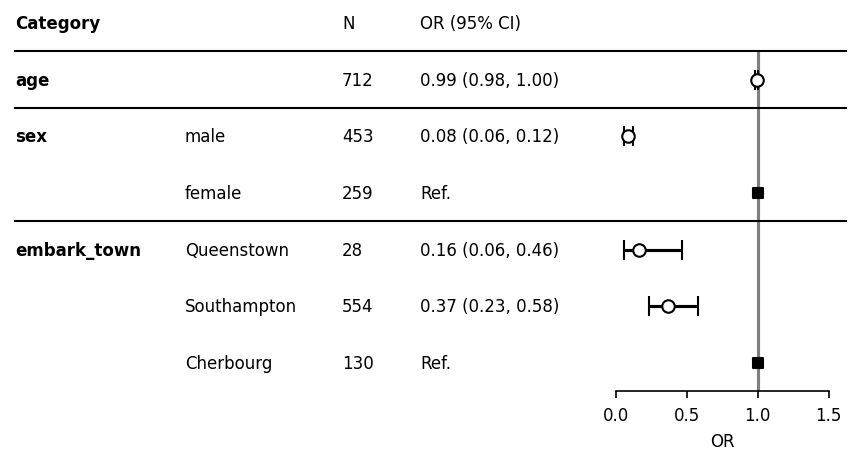

Quickstart¶
[1]:
from typing import Union, Optional, List, Dict, Tuple, Any
import pandas as pd
import numpy as np
import matplotlib.pyplot as plt
%matplotlib inline
import statsmodels.api as sm
import statsmodels.formula.api as smf
import myforestplot as mfp
%load_ext watermark
%watermark -n -u -v -iv -w -p graphviz
Last updated: Wed Sep 07 2022
Python implementation: CPython
Python version : 3.9.7
IPython version : 8.0.1
graphviz: not installed
pandas : 1.4.1
matplotlib : 3.5.3
myforestplot: 0.1.6
statsmodels : 0.13.2
numpy : 1.21.5
Watermark: 2.3.1
Create pretty statsmodels result dataframe¶
titanic data can be downloaded from https://raw.githubusercontent.com/mwaskom/seaborn-data/master/titanic.csv.
[2]:
titanic = pd.read_csv("titanic.csv")
titanic = titanic[["survived", "pclass", "sex", "age", "embark_town"]]
titanic = titanic.dropna()
[3]:
res = smf.logit("survived ~ sex + age + embark_town", data=titanic).fit()
Optimization terminated successfully.
Current function value: 0.509889
Iterations 6
[4]:
res.summary()
[4]:
| Dep. Variable: | survived | No. Observations: | 712 |
|---|---|---|---|
| Model: | Logit | Df Residuals: | 707 |
| Method: | MLE | Df Model: | 4 |
| Date: | Wed, 07 Sep 2022 | Pseudo R-squ.: | 0.2444 |
| Time: | 06:33:12 | Log-Likelihood: | -363.04 |
| converged: | True | LL-Null: | -480.45 |
| Covariance Type: | nonrobust | LLR p-value: | 1.209e-49 |
| coef | std err | z | P>|z| | [0.025 | 0.975] | |
|---|---|---|---|---|---|---|
| Intercept | 2.2046 | 0.322 | 6.851 | 0.000 | 1.574 | 2.835 |
| sex[T.male] | -2.4760 | 0.191 | -12.976 | 0.000 | -2.850 | -2.102 |
| embark_town[T.Queenstown] | -1.8156 | 0.535 | -3.393 | 0.001 | -2.864 | -0.767 |
| embark_town[T.Southampton] | -1.0069 | 0.237 | -4.251 | 0.000 | -1.471 | -0.543 |
| age | -0.0081 | 0.007 | -1.233 | 0.217 | -0.021 | 0.005 |
After fitting, clean dataframe.
[5]:
order = ["age", "sex", "embark_town"]
cont_cols = ["age"]
categorical = {"embark_town": ['Southampton', 'Cherbourg', 'Queenstown']}
df_sum = mfp.statsmodels_pretty_result_dataframe(titanic, res,
order=order,
cont_cols=cont_cols,
fml=".3f",
)
[6]:
df_sum
[6]:
| category | item | 0 | 1 | risk | nobs | risk_pretty | |
|---|---|---|---|---|---|---|---|
| 3 | age | age | 0.979300 | 1.004771 | 0.991954 | NaN | 0.99 (0.98, 1.00) |
| 0 | sex | male | 0.057848 | 0.122213 | 0.084082 | 453.0 | 0.08 (0.06, 0.12) |
| 4 | sex | female | NaN | NaN | NaN | 259.0 | Ref. |
| 1 | embark_town | Queenstown | 0.057027 | 0.464428 | 0.162742 | 28.0 | 0.16 (0.06, 0.46) |
| 2 | embark_town | Southampton | 0.229654 | 0.581167 | 0.365332 | 554.0 | 0.37 (0.23, 0.58) |
| 5 | embark_town | Cherbourg | NaN | NaN | NaN | 130.0 | Ref. |
The above type of dataframe structure is required. If you prepare dataframe like above, you do not need to use “mfp.statsmodels_pretty_result_dataframe”.
Create forestplot¶
[7]:
df = df_sum.copy()
[8]:
df["nobs"] = (df["nobs"]
.replace(np.nan, titanic.shape[0])
.astype(int)
)
[9]:
plt.rcParams["font.size"] = 8
fp = mfp.BaseForestplot(ratio=(8,3), dpi=150, figsize=(7,3), df=df)
fp.errorbar(errorbar_kwds=None)
fp.ax2.set_xlim([0, 1.5])
fp.ax2.set_xticks([0, 0.5, 1, 1.5])
fp.ax2.set_xlabel("OR")
fp.ax2.axvline(x=1, ymin=0, ymax=1.0, color="black", alpha=0.5)
fp.ax1.set_xlim([0.1, 1])
fp.embed_strings("category", 0.1, header="Category",
duplicate_hide=True,
text_kwds=dict(fontweight="bold"),
header_kwds=dict(fontweight="bold")
)
fp.embed_strings("item", 0.36, header="", replace={"age":""})
fp.embed_strings("nobs", 0.60, header="N")
fp.embed_strings("risk_pretty", 0.72, header="OR (95% CI)")
fp.horizontal_variable_separators()
plt.show()

Since this figure does not include all the participants rows, let’s include that.
[10]:
fontsize = 8
fp = mfp.BaseForestplot(ratio=(8,3), dpi=150, figsize=(7,3), df=df)
fp.errorbar(errorbar_kwds=None)
fp.ax2.set_xlim([0, 1.5])
fp.ax2.set_xticks([0, 0.5, 1, 1.5])
fp.ax2.axvline(x=1, ymin=0, ymax=1.0, color="black", alpha=0.5)
fp.ax2.set_xticks([0, 0.5, 1, 1.5])
fp.ax2.set_xticklabels([0, 0.5, 1, 1.5], fontsize=fontsize)
fp.ax2.set_xlabel("OR", fontsize=fontsize)
fp.ax1.set_xlim([0.1, 1])
y_header = 1.5
fp.embed_strings("category", 0.1, header="Category", fontsize=fontsize,
duplicate_hide=True,
text_kwds=dict(fontweight="bold"),
header_kwds=dict(fontweight="bold"),
y_header=1.5
)
fp.ax1.text(0.10, 0.8, "All participants", fontweight="bold", fontsize=fontsize)
fp.embed_strings("item", 0.36, header="", fontsize=fontsize, replace={"age":""},
y_header=1.5)
fp.embed_strings("nobs", 0.60, header="N", fontsize=fontsize,
y_header=1.5)
fp.ax1.text(0.60, 0.8, "712", fontsize=fontsize)
fp.embed_strings("risk_pretty", 0.72, header="OR (95% CI)", fontsize=fontsize,
y_header=1.5)
fp.horizontal_variable_separators()
plt.show()
[ ]: